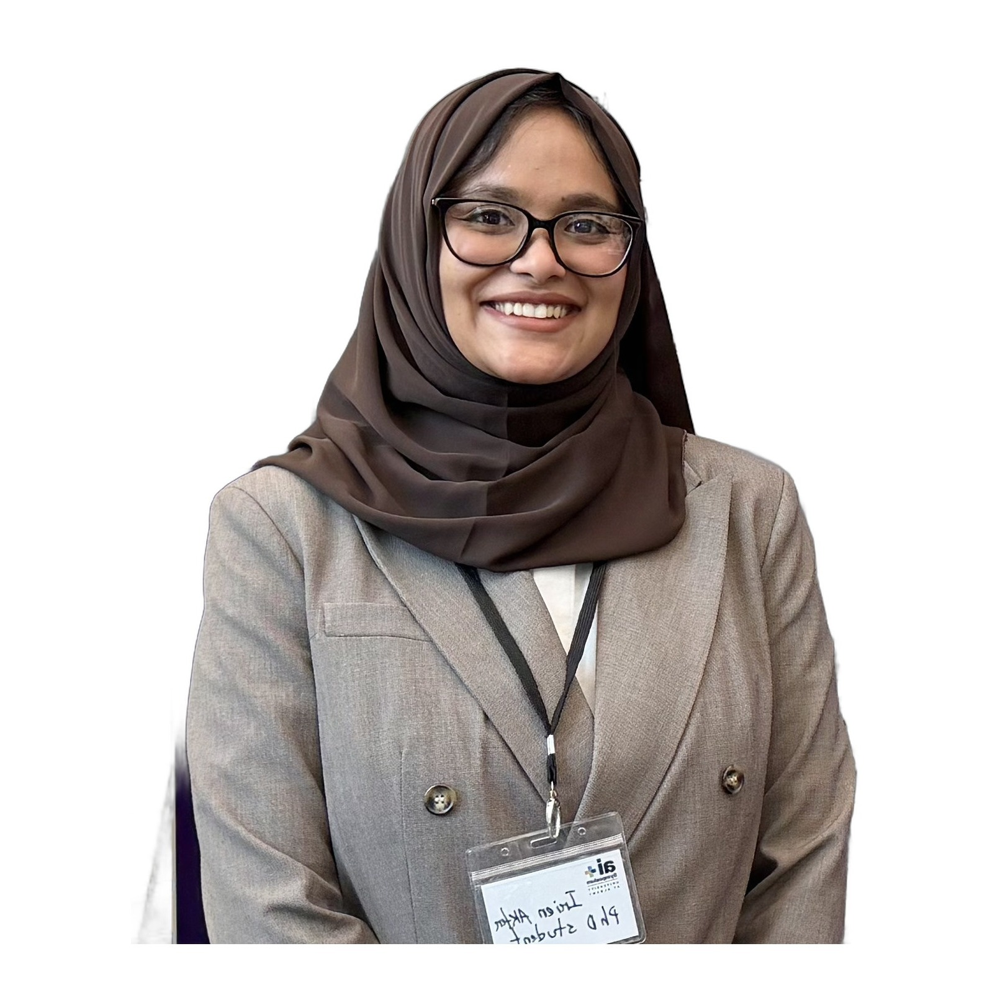

Cyberbullying Detection
Detecting harassment and harmful language using content and context signals.

PhD Student · Computer Science, University at Albany, SUNY
I am a PhD student in Computer Science at the University at Albany, SUNY, working with the Albany Lab for Privacy and Security (ALPS) under the supervision of Dr. Pradeep K. Atrey. I hold a B.Sc. in Computer Science from the International Islamic University Malaysia (IIUM).
My research focuses on forecasting toxicity escalation in online conversations — combining time-aware and multimodal machine learning to build early-warning systems for cyberbullying and coordinated online harm on platforms like Reddit and Instagram.
🏆 Won Best Poster Presentation Award
Spring 2026Recognized at the UAlbany Showcase, College of Nanotechnology, Science, and Engineering (CNSE), for research on forecasting toxic social media storms.
🎤 Presented at NYCWiC
Spring 2026Presented "Forecasting Neg Storms" at the New York Celebration of Women in Computing, Hilton Albany.
📰 Featured on News10-ABC and multiple national outlets
March 2026Coverage of the early-warning framework for toxic social media storms, developed with Rutgers University.
See all coverage →📄 "Neg Storms" paper published at IEEE ISM 2025
2025Introduced Comment Storm Severity (CSS), a time-aware metric for forecasting toxicity escalation from the first few comments in a thread.
Read the paper →Detecting harassment and harmful language using content and context signals.
ML models that support moderation decisions and reduce harm at scale.
AI-driven approaches to understanding harmful speech patterns online.
Early-warning tools and decision support for safer platforms.
How communities behave under toxicity and what interventions work.
Modeling trajectories and signals to forecast escalation early.
SpotTox — AI-Powered Toxicity Detection Web Application
Fall 2025Supervised a senior capstone team building an interactive web platform for early detection and analysis of toxic conversations, integrating BERT, RoBERTa, DistilBERT, and LSTM models.